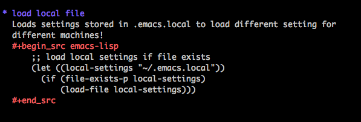

As every emacs tinkerer knows, over time, your .emacs configuration
file grows and grows, till it becomes impossible to manage.
The best tip I picked up over the web was to use org-mode, along with
org-babel to organize my .emacs file! Org-babel essentially allows you
to do literate programming in org-mode! For any emacs newbie/tinkerer,
if you copy-paste a lot of customizations from different places on the
web I would highly recommend doing this, since this will make it very easy
to customize your emacs over time and across different machines!
The snippet below is what I have in my .emacs
;; add the locations of emacs-org/ other extenstions
(add-to-list 'load-path "~/.emacs.d/")
(add-to-list 'load-path "~/.emacs.d/org-7.01h/lisp")
(require 'cl)
;; set-up org babel
(setq org-babel-load-languages '((emacs-lisp . t)))
(setq org-confirm-babel-evaluate nil)
(require 'org-install)
(require 'org)
;; load neatly organized org file!
(org-babel-load-file "~/org/emacs-config.org")
And then each new customization goes in my emacs-config.org
in the following format…

This allows me to use collect different enhancements/configs from
across various places, and keep my .emacs organized into neat
sections using org-mode! Even if you don't have too much in your .emacs right now, over
time you will always find new things to add to it, so I highly
recommend getting started with this setup before it's too late.